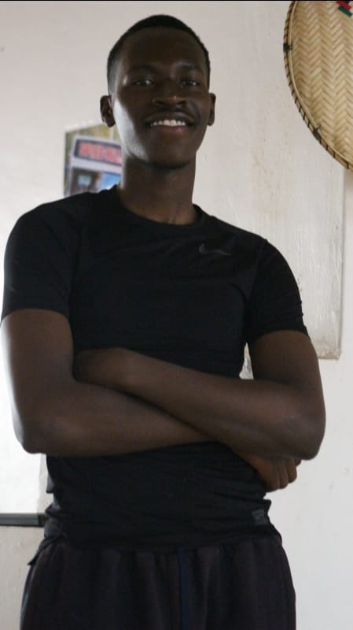

Connecting environmental technology, vocational education, communities, and global employment through one integrated ecosystem.
Discover Donkey DepotBeyond traditional waste management. Towards an integrated environmental ecosystem.
Donkey Depot is a decentralized, digital-first environmental aggregator and training ecosystem. We are a hybrid Global Environmental Tech Aggregator and Vocational Impact Enterprise with operational hubs in Kenya, Pakistan, India, and other international regions.
We do not fit into a traditional waste management category because we do not directly handle garbage or own collection fleets. Instead, we operate at the intersection of clean-tech logistics, environmental policy advisory, and workforce development.
Donkey Depot acts as a technology bridge, connecting local citizens with existing licensed waste service providers to streamline responsible disposal and support more sustainable environmental policies.
Beyond our digital network, we develop localized vocational training initiatives that equip community representatives and students with practical environmental technology skills. Through corporate recruitment partnerships, we aim to connect trained graduates with meaningful employment opportunities.
Three interconnected pillars driving our environmental and social impact.
Through our EcoLoop ecosystem, we connect local citizens with existing licensed waste disposal providers. Our platform facilitates service requests and coordination while collecting ground-level data that can support environmental planning and policy development.
Explore EcoLoopWe develop localized vocational training initiatives designed to equip students and community representatives with environmental technology skills. Our training ecosystem seeks alignment with relevant national vocational frameworks and international standards.
Discover Our NetworkWe aim to bridge the gap between vocational education and employment by connecting trained individuals with corporate recruitment partners and opportunities across environmental services and technology sectors.
Join Our CommunityConnecting regional operations and opportunities across international markets.
Our environmental technology and operational network.
Expanding regional coordination and ecosystem development.
Developing opportunities in environmental technology and training.
Building connections with new communities and international partners.
New capabilities designed to strengthen our ecosystem and operations.
Our Research & Compliance Division focuses on international standards, environmental policy alignment, research, and operational integrity across our global network, including our regional operations in Pakistan.
Our first in-house platform, designed to simplify daily work, streamline internal operations, improve coordination, and connect different parts of the Donkey Depot ecosystem through a centralized digital environment.
Donkey Depot is built around a hybrid model that brings environmental technology, vocational development, and employment pathways into one interconnected ecosystem.
While many organizations concentrate on individual areas such as waste service platforms or classroom-based training, our approach is designed to connect these functions.
Our digital platform supports service coordination and environmental data collection, while our training initiatives help develop the skilled workforce needed by the industry. Corporate partnerships then create pathways between qualified talent and employment opportunities.
This asset-light, technology-driven structure is designed to support scalability, regional adaptation, and long-term environmental and vocational impact.
People working to connect innovation with real-world impact.

Founder / CEO
CIO
We believe sustainability should be accessible, practical, and powered by innovation. By connecting digital infrastructure, environmental responsibility, and vocational education, we aim to create opportunities that benefit both communities and the planet.
Our vision is to build an interconnected ecosystem where technology enables better services, education develops capable professionals, and employment creates lasting opportunities for future generations.
Connect with Donkey Depot, discover our initiatives, and become part of a growing network working towards a more sustainable and opportunity-driven future.